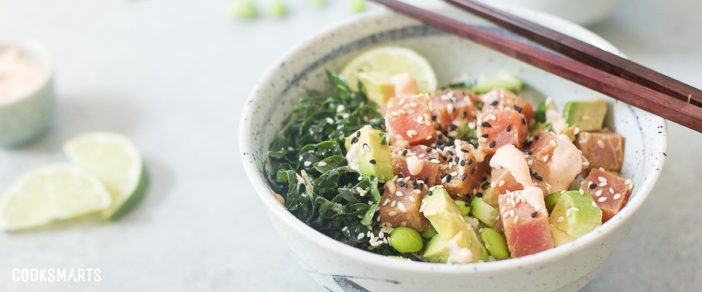
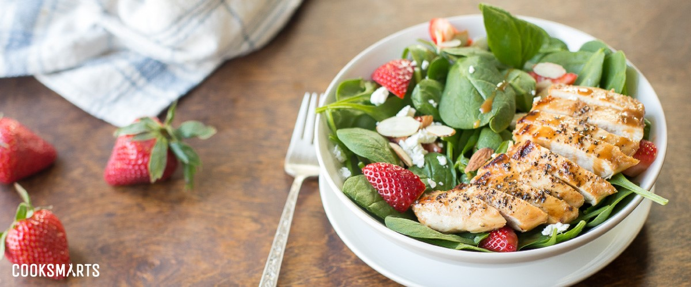

From the ratings and reviews, this year’s meals were our best yet. We tried a new creative process this
year,
but I think the main reason is that our meal planner, has grown to become a total genius at understanding
what
meals work best for our members.
In the spirit of the new year – and to kickstart 2022 being the year of NO EXCUSES in the kitchen – we put
together a list of our top 10 meals of 2021.
Beef and Barley Soup
This warm, comforting soup was our top-rated meal of 2017, proving that simple ingredients can produce
super
flavorful results. This recipe consists of ingredients you can find year-round, so you can make this
dish
anytime you crave warmth and comfort.
Many of our meal plan members simplified the recipe even more by making it in an Instant Pot for a quick
weeknight dinner. (Some of our members are huge Instant Pot fans; they created a Facebook Group
dedicated to
converting our meal plan recipes to be Instant Pot-friendly!
Tuna Poke Bowl & Balsamic Chicken and Spinach Salad
Tied for 2nd place, the Tuna Poke Bowl and the Balsamic Chicken & Spinach Salad are perfect options for those that want to switch it up or enjoy a meal with fresh, seasonal fruits and veggies.
 Maple-Dijon Panko Salmon
Easy to make, uses ingredients you have in your pantry, healthy and flavorful, and comforting but unique enough to make dinnertime memorable. The crunchy topping, which is a blend of sweet and savory flavors, is a huge hit with our cooking community.